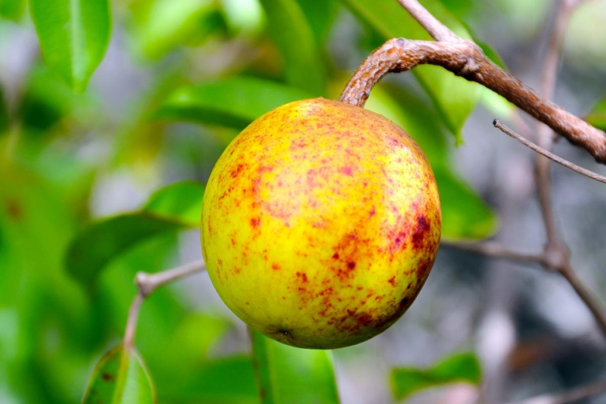
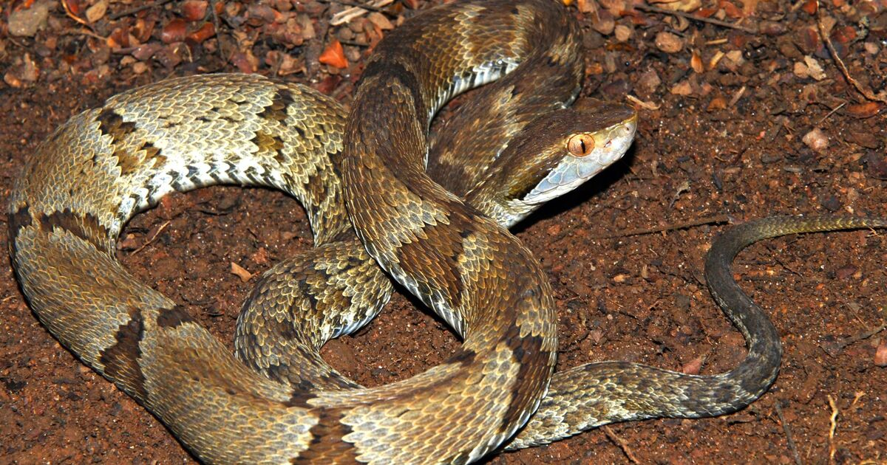
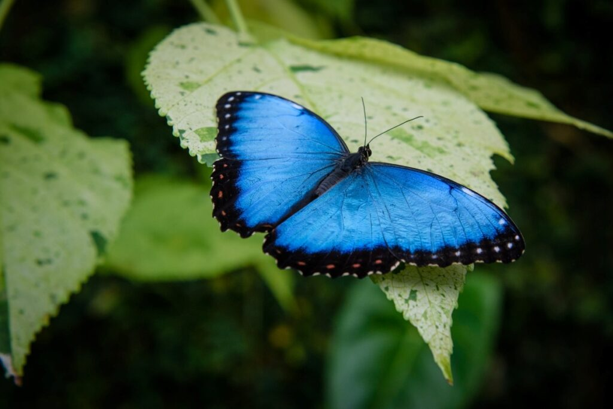

Resumo
- "O Cerrado é considerado o segundo maior bioma da América do Sul e o segundo maior bioma do Brasil.
- É conhecido como savana brasileira e possui uma grande biodiversidade.
- Sua vegetação possui características predominantes, como árvores de tronco grosso e tortuoso, além de gramíneas e de arbustos.
- O clima do Cerrado é tropical sazonal, apresentando duas estações definidas: uma seca e outra chuvosa.
- Os solos desse bioma são geralmente pobres em nutrientes e apresentam coloração avermelhada e alta porosidade.
- A fauna do Cerrado, apesar de pouco conhecida, é bastante diversa, contando com espécies como a onça-pintada e o tamanduá-bandeira.
- Infelizmente, o Cerrado é uma formação vegetal que vem sendo bastante devastada, principalmente pela expansão de atividades agropecuárias, o que tem causado inúmeras perdas de biodiversidade."
Localização
O Cerrado é um dos cinco grandes biomas do Brasil, cobrindo cerca de 25% do território nacional e perfazendo
uma área entre 1,8 e 2 milhões de km2 nos Estados de Goiás, Tocantins, Mato Grosso do Sul, sul do Mato
Grosso, oeste de Minas Gerais, Distrito Federal, oeste da Bahia, sul do Maranhão, oeste do Piauí e porções
do Estado de São Paulo. Ainda há porções de cerrado em outros estados da federação (PR) ou em áreas
disjuntas dentro de outros biomas (Floresta Amazônica). É a segunda maior formação vegetal do país, após a
Floresta Amazônica, concentrando-se principalmente no Planalto Central Brasileiro (Coutinho, 1990; Eiten,
1994; Ribeiro &Walter, 1998).
O Cerrado é uma das regiões de maior biodiversidade do mundo, e estima-se que possua mais de 6 mil espécies
de árvores e 800 espécies de aves (MMA, 2002). Acredita-se que mais de 40% das espécies de plantas lenhosas
e 50% das abelhas sejam endêmicas. Ao lado da Mata Atlântica, é considerado um dos hotspots mundiais, ou
seja, um dos biomas mais ricos e ameaçados do mundo (MMA, 2002).
Assim como ocorre nos outros biomas do Brasil, a posição e extensão do Cerrado são determinadas pelo clima,
que é do tipo tropical, com precipitação variando de 750 a 2000 mm por ano, em média, embora na maior parte
da província ocorram chuvas entre 1100 e 1600 mm por ano. Ocorrem duas estações climáticas por ano, a
estação seca, que dura aproximadamente cinco meses (de maio a outubro) e a estação chuvosa, no restante do
ano (de outubro a maio) (Eiten, 1994).
Vegetação
Caracterizado por uma vegetação de savana, o Cerrado possui um equilíbrio único entre pastagens e arbustos, com árvores de porte médio e espinhosas adaptadas às condições do solo e do clima. Seu solo é predominantemente ácido e pobre em nutrientes, mas a vegetação é adaptada a essas condições adversas. O bioma é conhecido por suas plantas xerófitas, que são adaptadas para sobreviver a longos períodos de seca.
Dentre elas destacam-se: pequi, buriti, mangaba, cagaita, bacupari, araticum, babaçu, bacuri, cajuzinho-do-Cerrado, coquinho-azedo, gueroba, murici, jatobá, mangaba e baru.
A Fauna do Cerrado: Uma Diversidade em Perigo
O Cerrado, um dos principais biomas brasileiros, é conhecido por sua vasta diversidade de flora, mas sua
fauna também é incrivelmente rica e variada. Este bioma, que cobre cerca de 22% do território nacional, é o
lar de uma grande quantidade de espécies animais, muitas das quais são endêmicas e desempenham papéis
ecológicos cruciais.
Mamíferos
Entre os mamíferos, o Cerrado abriga algumas espécies emblemáticas. O lobo-guará (Chrysocyon brachyurus), um
canídeo de pelagem avermelhada e orelhas grandes, é uma das espécies mais conhecidas e simbólicas do
Cerrado. Adaptado às condições secas e ao ambiente aberto, o lobo-guará é um predador de pequenos mamíferos
e insetos. Outro mamífero notável é o tamanduá-bandeira (Myrmecophaga tridactyla), um animal especializado
em se alimentar de formigas e cupins, que usa suas longas garras para escavar seus alimentos.
O cervo-do-pantanal (Blastocerus dichotomus), que também é encontrado no Cerrado, é o maior cervídeo da
América do Sul e habita áreas alagadas e de vegetação densa. Embora seja mais associado às regiões de
pantanal, ele também pode ser encontrado em áreas do Cerrado.

Aves
A avifauna do Cerrado é igualmente rica. Entre as aves mais notáveis estão o emú (Rhea americana), uma ave não voadora que se adapta bem ao ambiente aberto do Cerrado, e o joão-de-barro (Furnarius rufus), conhecido por construir ninhos de barro com formato característico. A arara-azul-de-lear (Anodorhynchus leari) é uma das espécies ameaçadas de extinção, com sua plumagem vibrante e comportamento social complexo.

Réptis e Anfíbios
Os répteis e anfíbios do Cerrado são igualmente diversos. Entre os répteis, a jararaca (Bothrops spp.) é uma serpente venenosa comum, enquanto o teiú (Salvator merianae) é um grande lagarto que se alimenta de uma variedade de presas, incluindo frutas e pequenos animais. Os anfíbios incluem espécies como a perereca-de-barriga-vermelha (Hypsiboas cinerascens), que tem adaptado sua reprodução a ambientes temporários de água.
Invertebrados
A diversidade de invertebrados no Cerrado é impressionante. As borboletas, como a borboleta-azul (Dione juno), são comuns e desempenham um papel importante na polinização. Os insetos, como as formigas e os besouros, são abundantes e desempenham funções ecológicas vitais, como a decomposição de matéria orgânica e o controle de pragas.
